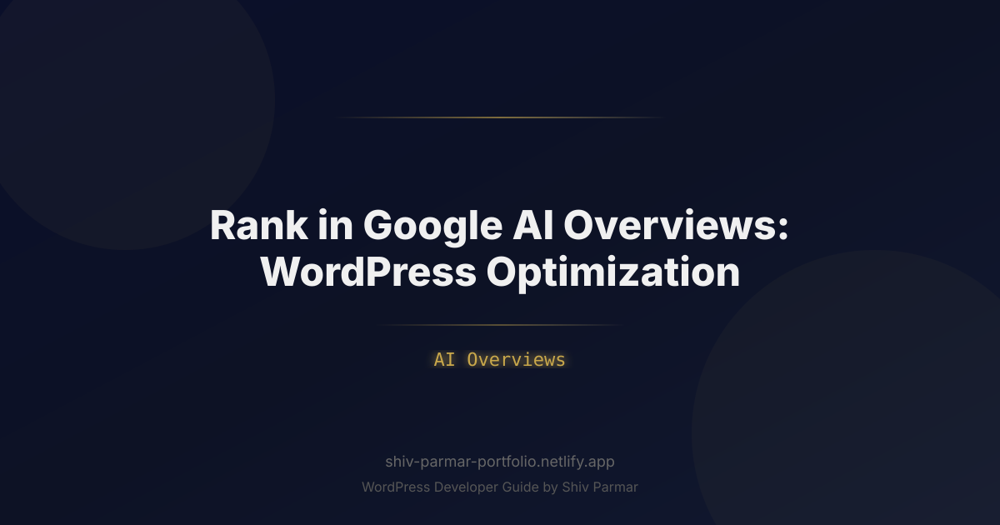

Rank in Google AI Overviews: WordPress Optimization | Shiv Parmar
Table of Contents
The organic search landscape has undergone its most consequential structural shift since the introduction of mobile-first indexing. The era of the predictable "ten blue links" has evolved into an answer-engine paradigm dominated by Google AI Overviews. Powered by custom Gemini models and advanced Retrieval-Augmented Generation (RAG) frameworks, Google no longer merely indexes web pages; it reads, extracts, synthesizes, and attributes data directly at the top of the Search Engine Results Page (SERP).
For WordPress publishers, site owners, and enterprise webmasters, this transition has sparked intense anxiety over zero-click searches and vanishing organic impressions. However, the data reveals a different reality: websites chosen as sources for AI Overviews earn unprecedented authority, hyper-targeted referral traffic, and brand visibility that traditional organic positions simply cannot match. Securing these citations is not a matter of luck—it requires deliberate architectural, semantic, and structural engineering.
WordPress powers over 40% of the open web, yet the vast majority of WordPress installations are poorly configured for LLM parsing. Out-of-the-box themes, bloated page builders, messy DOM trees, and unoptimized schema architectures create friction that prevents search crawlers and RAG pipelines from extracting core answers. This comprehensive guide outlines the exact technical blueprint required to optimize your WordPress platform to secure consistent citations and dominate ranking within Google AI Overviews.
What is Google AI Overviews?
Google AI Overviews (originally introduced as the Search Generative Experience, or SGE) is an integrated search interface feature that provides synthesized, multi-source answers to complex user queries. Rather than requiring users to open multiple browser tabs to assemble information, Google’s LLM analyzes top-ranking documents across the web in real time, extracts relevant factual passages, synthesizes a singular coherent response, and displays prominent citation links back to the original source materials.
To grasp how to achieve a high-tier ranking within these snapshots, it is essential to understand the technical pipeline powering the feature:
- Query Intent & Routing: Google's search algorithms evaluate whether a query warrants an AI Overview. Queries requiring synthesis, step-by-step troubleshooting, comparisons, or multi-faceted answers trigger the LLM pipeline, while basic transactional queries often do not.
- Vector Retrieval & Passage Ranking: Google executes a traditional and neural retrieval pass (using systems like RankEmbed and ColBERT) to fetch the most semantically relevant documents from the index.
- RAG Synthesis: The retrieved documents are processed by a dedicated Gemini model within a tightly constrained context window. The model synthesizes an original answer while strictly anchoring its claims to facts extracted from the retrieved text to avoid hallucinations.
- Citation Attribution: The algorithm dynamically matches every synthesized sentence or bullet point to one or more primary URLs, displaying them as interactive carousel cards or inline hyperlinked badges.
Crucially, Google AI Overviews do not replace the traditional index; they rely entirely upon it. Your WordPress site must first be discoverable, crawlable, and indexable before it can ever be selected for semantic synthesis.
Why Ranking in Google AI Overviews Matters in 2026
The digital marketing ecosystem in 2026 is defined by a shift toward ambient computing, conversational interfaces, and hyper-dense information delivery. The days of capturing massive traffic simply by writing 3,000-word articles packed with generic keyword variations are over. If your content does not appear within the AI-generated snapshot, your organic presence is effectively pushed below the fold, resulting in steep declines in click-through rates (CTR).
However, securing a place within the Google AI synthesis completely alters the quality of your referral traffic. When a user clicks an attribution link inside an AI Overview, they are not browsing aimlessly; they are seeking deep-dive validation, specialized tools, primary data, or transactional execution. The traffic that originates from these citations converts at a substantially higher velocity than standard organic impressions.
| Search Dynamic | Traditional SERP (Ten Blue Links) | Google AI Overviews |
|---|---|---|
| SERP Real Estate | Mid-to-lower screen space, often pushed beneath ads. | Prime real estate spanning the top 60–80% of the viewport. |
| Extraction Model | Exact-match keyword retrieval & basic passage snippets. | Semantic entity extraction, RAG synthesis, contextual grounding. |
| User Click Intent | Informational discovery and preliminary scanning. | Verification, deep exploration, transactional commitment. |
| WordPress Dependency | Basic on-page meta tags, keyword density, and backlinks. | Clean DOM trees, fast TTFB, structured JSON-LD entities, high Information Gain. |
Furthermore, Google uses an algorithmic metric often referred to as an "Information Gain Score" (patented by Google). Under this mechanism, the search engine penalizes content that merely regurgitates facts already present in the training set or in competing URLs. Winning a citation requires presenting distinct data points, unique methodology, proprietary research, or highly structured frameworks that the Gemini model can easily pull to enrich its synthesized answer.
Step-by-Step Guide to WordPress Optimization for Google AI Overviews
Optimizing WordPress for LLM-driven synthesis requires transforming your website from a collection of loosely structured HTML posts into a pristine, machine-readable knowledge repository. Follow this technical step-by-step roadmap to re-engineer your WordPress environment.
1. Deploy Granular, Nested JSON-LD Entity Schema via WordPress Hooks
Basic schema plugins merely output generic BlogPosting or Article markup. To maximize visibility in Google AI models, your schema must map entities directly using Wikidata URIs, define the explicit author credentials, and cleanly nest the relationships between the publisher, the primary topic, and secondary mentioned entities.
Instead of relying on heavy plugins that inject disconnected JSON-LD scripts, use a custom WordPress filter inside your theme's functions.php or a custom site-specific plugin to output deeply connected schema nodes.
function add_advanced_ai_schema() {
if ( is_single() ) {
global $post;
$author_id = $post->post_author;
$author_name = get_the_author_meta('display_name', $author_id);
$author_url = get_author_posts_url($author_id);
$schema = [
'@context' => 'https://schema.org',
'@graph' => [
[
'@type' => 'TechArticle',
'@id' => get_permalink() . '#article',
'isPartOf' => [
'@type' => 'WebPage',
'@id' => get_permalink(),
'url' => get_permalink(),
'name' => get_the_title(),
],
'headline' => get_the_title(),
'datePublished' => get_the_date('c'),
'dateModified' => get_the_modified_date('c'),
'mainEntityOfPage' => get_permalink(),
'author' => [
'@type' => 'Person',
'@id' => $author_url . '#author',
'name' => $author_name,
'sameAs' => [
'https://www.linkedin.com/in/author-profile/',
'https://en.wikipedia.org/wiki/Author_Profile'
]
],
'about' => [
[
'@type' => 'Thing',
'name' => 'Artificial Intelligence',
'sameAs' => 'https://en.wikipedia.org/wiki/Artificial_intelligence'
],
[
'@type' => 'Thing',
'name' => 'Search Engine Optimization',
'sameAs' => 'https://en.wikipedia.org/wiki/Search_engine_optimization'
]
],
'speakable' => [
'@type' => 'SpeakableSpecification',
'cssSelector' => ['.ai-direct-answer', '.quick-summary']
]
]
]
];
echo '<script type="application/ld+json">' . wp_json_encode( $schema, JSON_UNESCAPED_SLASHES | JSON_PRETTY_PRINT ) . '</script>' . "\n";
}
}
add_action( 'wp_head', 'add_advanced_ai_schema', 5 );
Notice the inclusion of the speakable property and the explicit sameAs entity reconciliation pointing directly to Wikipedia. This tells Google’s Knowledge Graph precisely what subjects this document covers, radically accelerating the confidence score generated by RAG algorithms.
2. Architect Content via the "Inverted Pyramid" Block Structure
LLMs consume text through tokenization. When Google’s RAG pipeline parses your WordPress post, it divides the text into contextual chunks (typically 200–500 tokens). If your answer is buried behind an 800-word anecdotal introduction, the retrieval model will often assign your passage a low relevance score and bypass your page entirely.
Structure your WordPress posts using the Gutenberg Block Editor to satisfy what linguistic researchers call "information atomization":
- Target Header (H2 or H3): Frame the heading as a precise question or definitive noun-phrase (e.g., "How Does Retrieval-Augmented Generation Work in Search?").
- Direct Answer Capsule: Provide a complete, standalone 40-to-60-word response in the very first paragraph immediately following the heading. Use unambiguous subject-predicate sentence structures.
- Data/List Breakdown: Follow the direct answer with an unordered list (
<ul>) or ordered steps (<ol>) highlighting the underlying mechanics or data points. - Contextual Nuance: Use subsequent paragraphs to explain edge cases, exceptions, and advanced implementations.
Here is an example of an HTML snippet designed for high LLM extraction probability:
<div class="ai-summary-block" style="background:#f8fafc; border-left:4px solid #2563eb; padding:16px; margin:20px 0;">
<h3 style="margin-top:0;">What is the optimal crawl budget strategy for WordPress?</h3>
<p><strong>The optimal crawl budget strategy for WordPress involves disabling auto-generated taxonomies, restricting search result pages via robots.txt, and implementing high-performance object caching.</strong> This preserves server resources, ensuring that Googlebot and Google-Extended crawlers prioritize newly published and updated commercial URLs.</p>
<ul>
<li>Set noindex on low-value tag and author archives.</li>
<li>Implement Redis or Memcached to keep TTFB under 200ms.</li>
<li>Prune 404s and redirect chains via server-level Nginx rewrite rules.</li>
</ul>
</div>
3. Strip DOM Bloat and Eliminate Page Builder Clutter
One of the primary failure modes for WordPress sites attempting to compete for ranking in AI Overviews is excessive Document Object Model (DOM) depth. Visual page builders (such as legacy installations of Divi, Elementor, or WPBakery) notoriously wrap single lines of text inside 15 to 20 nested <div> containers.
LLM scrapers and headless parsing agents run on tokenization and compute budgets. An overly complex DOM consumes excessive memory during DOM parsing, delays HTML streaming, and fragments semantic text extraction. To remediate this in WordPress:
- Transition to native Gutenberg blocks or lightweight, performance-first block libraries (such as GenerateBlocks, Spectra, or Kadence).
- Ensure your total DOM depth remains below 32 levels, with fewer than 800 total DOM nodes per document.
- Deregister unnecessary WordPress core stylesheets and script handles that load universally on single post templates.
function streamline_wordpress_dom() {
// Remove Gutenberg block library styles if loading custom lightweight CSS
if ( ! is_admin() && ! is_single() ) {
wp_dequeue_style( 'wp-block-library' );
wp_dequeue_style( 'wp-block-library-theme' );
wp_dequeue_style( 'wc-blocks-style' ); // Dequeue WooCommerce block styles on non-shop pages
}
}
add_action( 'wp_enqueue_scripts', 'streamline_wordpress_dom', 100 );
4. Expose Clean REST API Endpoints for Headless Extraction
Google’s systems are increasingly relying on machine-readable endpoints to discover and cross-reference authoritative entities. WordPress natively includes a powerful REST API, but many sites either break it with aggressive security plugins or fail to expose the full contextual metadata required by automated data pipelines.
You can optimize your WordPress REST API to return sanitized, structured content explicitly designed for scraping agents and automated validation pipelines:
function expose_ai_friendly_rest_fields() {
register_rest_field( 'post', 'ai_context', [
'get_callback' => function( $post_arr ) {
$post_id = $post_arr['id'];
return [
'direct_summary' => get_post_meta( $post_id, '_direct_summary_answer', true ),
'primary_entity' => get_post_meta( $post_id, '_primary_entity_wikidata', true ),
'key_takeaways' => get_post_meta( $post_id, '_key_takeaways_list', true ),
];
},
'schema' => null,
]);
}
add_action( 'rest_api_init', 'expose_ai_friendly_rest_fields' );
This allows external AI search tools, search indexers, and third-party RAG scrapers to ingest your post's verified core claims directly from https://yourdomain.com/wp-json/wp/v2/posts/ without having to untangle HTML formatting and JavaScript execution.
5. Build Entity-Centric Topical Clusters with Semantic Internal Links
Google AI Overviews rarely cite an isolated post from a site that lacks foundational topical authority. The RAG architecture seeks out sources with a high degree of "entity density"—meaning your site must prove comprehensive expertise across an entire subject graph.
In WordPress, you can construct authoritative topical clusters by structuring your internal links around explicit ontological relationships. Instead of linking with generic anchor text like "click here" or "read more," link your anchor text specifically to defined entities:
<!-- Poor Internal Linking for AI Retrieval -->
<p>If you want to know more about semantic configurations, <a href="/semantic-setup">click here</a>.</p>
<!-- Optimized Entity-Centric Linking for AI Retrieval -->
<p>To expand your architecture, implement <a href="/knowledge-graph-optimization" title="Entity-Based Knowledge Graph Optimization">knowledge graph optimization</a> across your WordPress database.</p>
Avoid automated internal linking plugins that blindly spam keywords throughout your content. Automated spamming degrades the context window. Instead, implement curated "Hub and Spoke" taxonomies where parent pages define broad concepts and child articles address highly specific sub-problems, linking back with descriptive, noun-rich anchors.
6. Configure Robots.txt and HTTP Headers for LLM Crawlers
To rank in Google AI Overviews, you must ensure that Google's specific extraction bots can fetch your assets without friction. While standard Googlebot handles core indexation, Google utilizes specialized crawlers, including GoogleOther and Google-Extended, to collect training data and dynamic RAG passages.
Verify that your WordPress site does not inadvertently block these crawlers via your robots.txt file. Add this dynamic configuration to your theme’s functions.php to manage crawler access natively:
function optimize_robots_for_google_ai( $output, $public ) {
if ( '1' == $public ) {
$ai_rules = "\n# Allow Google AI and Standard Extraction\n";
$ai_rules .= "User-agent: Googlebot\n";
$ai_rules .= "Allow: /\n";
$ai_rules .= "User-agent: GoogleOther\n";
$ai_rules .= "Allow: /\n";
$ai_rules .= "User-agent: Google-Extended\n";
$ai_rules .= "Allow: /\n";
$ai_rules .= "Disallow: /wp-admin/\n";
$ai_rules .= "Disallow: /readme.html\n";
$ai_rules .= "Allow: /wp-admin/admin-ajax.php\n";
return $output . $ai_rules;
}
return $output;
}
add_filter( 'robots_txt', 'optimize_robots_for_google_ai', 10, 2 );
Note: Blocking Google-Extended prevents Google from using your site to train future Gemini foundation models, but it can also interfere with your eligibility to appear in certain real-time generative search experiences. For maximum visibility in AI Overviews, allow full access to Google’s web-fetching user-agents.
Best Practices for Sustained AI Visibility
Securing a spot within an AI Overview is only half the battle; maintaining that citation requires ongoing operational hygiene. Search generative engines rely heavily on dynamic verification metrics to ensure their answers do not degrade over time.
Operationalize E-E-A-T with Direct Bylines and Custom Post Meta
Google’s quality raters and automated trust classifiers demand clear provenance. Every informational post published on your WordPress site must feature:
- An established, real-world author with verifiable professional credentials.
- A dedicated WordPress author archive containing a detailed biographical sketch, external links to recognized industry profiles (LinkedIn, ORCID, GitHub, Wikipedia), and a complete index of their authored works.
- A clear "Fact-Checked By" or "Technically Reviewed By" field when publishing content in high-stakes YMYL (Your Money, Your Life) sectors.
Implement HTML Comparison Tables and Definitive Glossaries
LLMs are exceptionally proficient at converting tabular HTML into synthesized comparison summaries. Whenever your article compares products, technologies, strategies, or metrics, avoid relying solely on narrative text. Render the comparison directly in a semantic, standard HTML <table> element.
| Content Component | Target Metric for AI Overview | Recommended WordPress Implementation |
|---|---|---|
| Answer Passage Length | 40–65 concise words (approx. 250–350 tokens). | Gutenberg Paragraph Block placed directly under an H2/H3 tag. |
| Data Visualizations | Structured, crawlable tabular text (not raw images). | Core Gutenberg Table Block with header rows explicitly defined. |
| Schema Validation | Zero errors or warnings in Google Rich Results Test. | Hardcoded JSON-LD arrays via wp_head, skipping bloated plugins. |
| Page Speed (TTFB) | Sub-200 milliseconds to first byte. | Server-level caching (Varnish/Fastly) + persistent object caching (Redis). |
Maintain Freshness Velocity on Legacy Content
Google prioritizes fresh, verified information when synthesizing AI answers for queries where facts change over time. If a WordPress article mentions statistics or steps from two years ago, the LLM’s retrieval pipeline will discard it in favor of recently modified sources that contain current data.
Create a recurring editorial maintenance cycle in WordPress: update dates via the native post_modified timestamp, revise outmoded claims, insert the current year into headers where appropriate, and check for broken outbound citations. Always ensure the dateModified field within your schema updates dynamically when you edit a post.
Common Mistakes to Avoid
Many WordPress site owners inadvertently sabotage their chances of ranking in AI Overviews by falling into technical and structural traps. Avoid these widespread errors:
1. Hiding Core Answers Behind Client-Side JavaScript Renderings
Relying on heavily dynamic JavaScript accordions, tabbed layouts, or infinite-scroll plugins often prevents search crawlers from reliably indexing your content. While Googlebot executes JavaScript, it does so via a second, resource-capped rendering wave. If Google’s RAG pipeline evaluates a URL during the initial retrieval pass before client-side hydration completes, the model will see an empty container, resulting in an immediate bypass. Always ensure that the core answer text is fully present in the initial server-rendered HTML response.
2. Publishing Generic "AI-Generated" Filler Lacking Information Gain
Using tools like ChatGPT to generate hundreds of generic, middle-of-the
Conclusion
Securing a prominent spot in Google AI Overviews requires shifting from traditional keyword targeting toward technical clarity, semantic structure, and authoritative content. By refining your WordPress site's schema markup, improving page speed, and formatting your insights for direct answerability, you dramatically increase your chances of ranking in these dynamic summaries. Succeeding with Google AI is fundamentally about delivering accurate, easily parseable answers that search engines can verify and cite without friction.
The transition toward an AI-driven search experience is well underway, making an optimized, technically sound website essential for your long-term ranking growth. While WordPress provides a flexible foundation, adapting to the nuances of AI Overviews demands deliberate architectural decisions, clean code, and forward-thinking SEO integration.
If you need an experienced developer to modernize your technical stack or build high-performance web experiences, Shiv Parmar is available for WordPress development work worldwide. Whether you are aiming to dominate Google AI Overviews or need bespoke WordPress customization, get in touch today to elevate your digital presence.